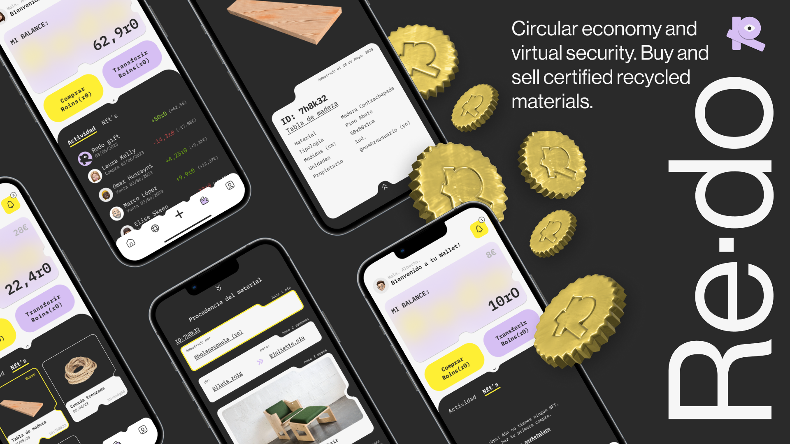
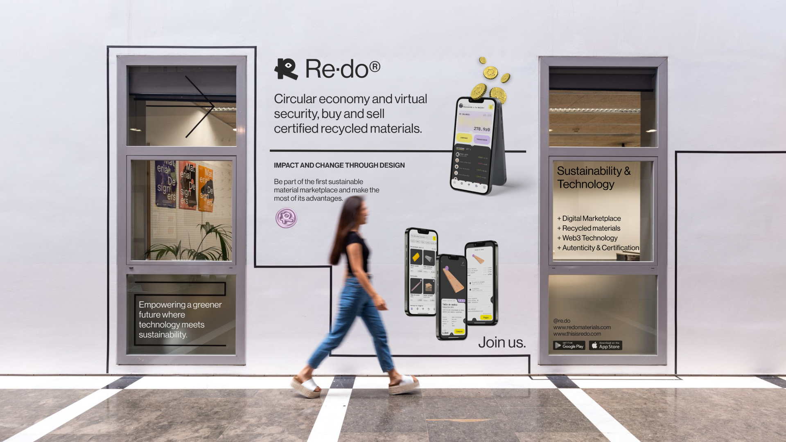
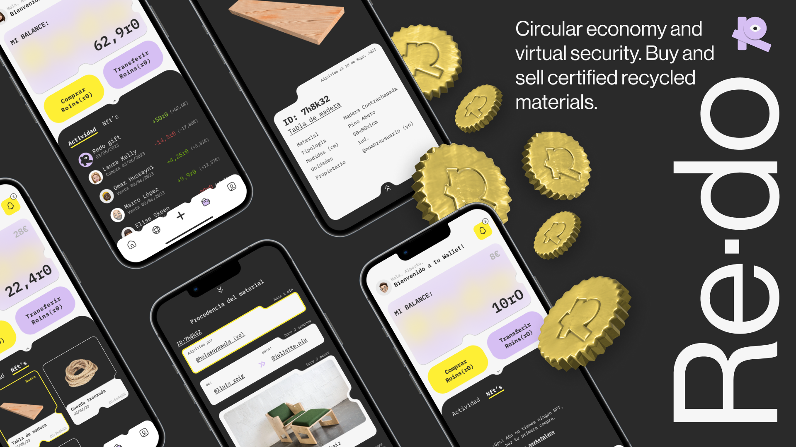
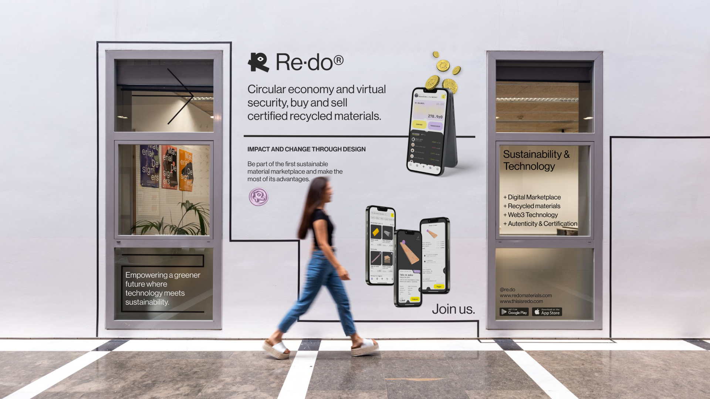
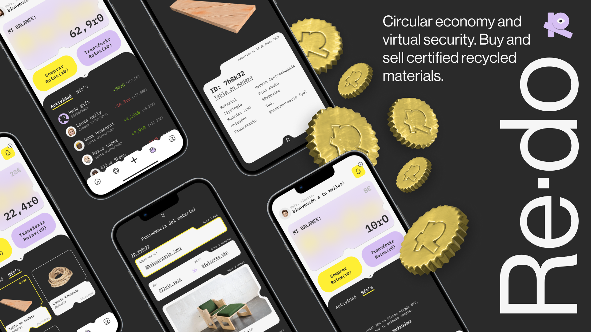
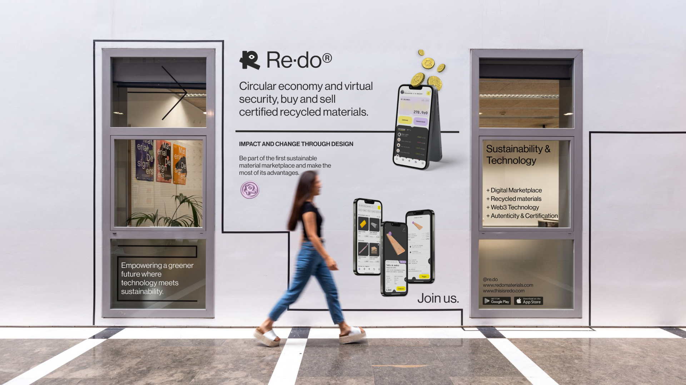

A digital marketplace where users can buy and sell unwanted and wasted materials from the design and art industries. Supported by Web3 and blockchain technology, Re·do allows users to certify materials and authenticate their sustainable origins, making sure every material sold is 100% recycled or has had other uses. It also allows users to make easy, fast and safe transactions with their own crypto wallet. A project that brings together sustainability and technology and aims to fight against the huge problematic that creative industries have. Where big amounts of perfectly good materials are being wasted and discarded every day. Re·do provides a vibrant and exciting design that embraces technology-like elements and breaks with the common marketplace aesthetic. Simple to use and very self-explanatory its navegation is easy and fun to use.

